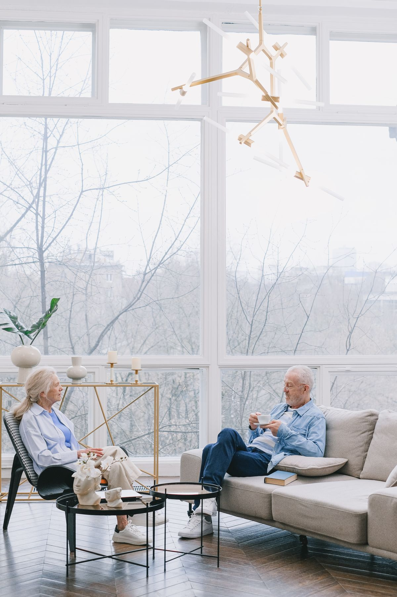
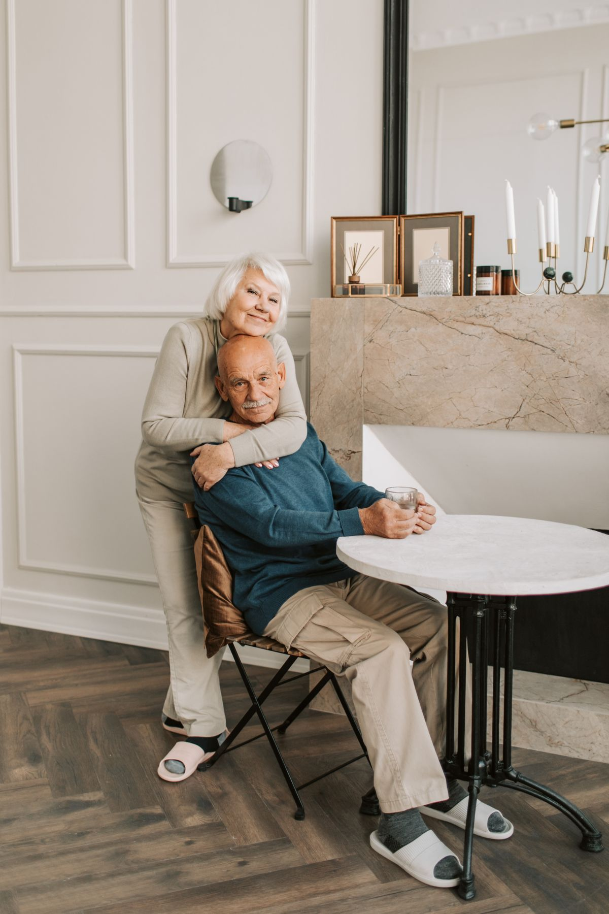

知道一线画图、汇报、改图的真实成本，能站在执行侧提需求、定标准。
从立项、方案、施工图到竣工，理解项目如何真正落地，而非只停留在图纸。
用 WorkBuddy / Obsidian / GitHub 把重复劳动自动化，先把自己变成杠杆。
公建项目合规、验收、签字权意识，可迁移到养老机构的合规运营。
把养老运营的专业语言，翻成可落地的空间与流程。
串起设计、医疗、运营、家属多方，减少信息损耗。
从 0 到 1 搭起一个机构的日常 SOP 与数据口径。
转向不是拍脑袋。把宏观趋势和我自己的可迁移能力叠在一起看，养老运营是一条「需求确定、人才稀缺、且我能补上关键拼图」的赛道。
